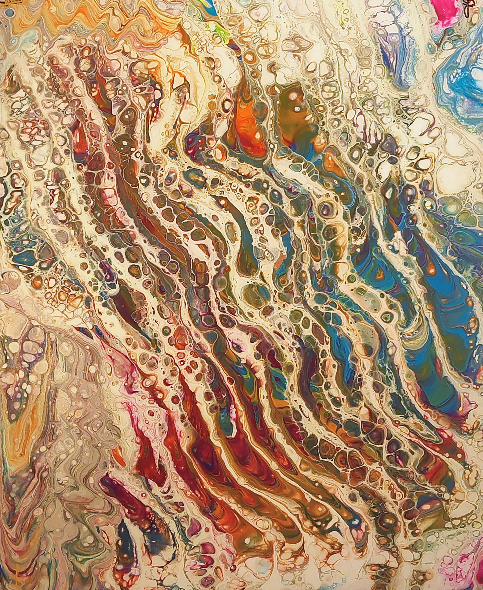

Professional, high-quality Acrylic paintings.
A minimalist portfolio featuring selected Acrylic paintings by local Austin artist Chris Broussard.
Artist Statement
Art has been my shadow since I could walk, but it found its most potent expression through the study of Kinetic Arrest. My work is an orchestration of collisions between molecular chemistry and creative intuition. By manipulating surface tension and fluid dynamics, I capture movement suspended in time, resulting in patterns that mimic the complex vibrations found in nature.
I do not paint static images; I facilitate environments where pigments can interact, compete, and eventually find equilibrium. My deep-rooted mastery of color theory allows me to predict these interactions while leaving enough room for the organic "chaos" that defines my style. Each series represents a rigorous exploration of theme and methodology, bridging the gap between scientific precision and abstract emotion.
"Art should be an invitation to wonder."


Selected Works
A curated selection of recent work.
Click on the image to see the corresponding art in detail.

Kinetic Flow
24"x36"
Cells wheel like constellations, carried on a slow tide of light.

Bismuth Bloom
30"x30"
Metallic petals crystallize into luminous cells, balancing structure with motion.

Magenta Monsoon
24"x36"
Gold surges and splinters, a bright tide breaking into crystal song.

Cinder's River
30"x30"
Embers run like a dark river, glowing beneath a veil of smoke.

Floral Kinetic
24"x36"
Petals flare and whirl, a garden held in a single breath.

Verdant Veil
30"x30"
Verdant veils fold and unfurl, soft as moss after rain.

Cerulean Swirl
24"x36"
Sea-blue spirals turn softly, a quiet whirlpool of calm.

Solar Bloom
24"x36"
Three suns open at once, spilling heat into bloom.

Abyssal Dawn
24"x36"
Deep ocean blues meet the first light of emergence.

Twilight Tides
24"x36"
Dusk-colored waves roll in, carrying the last light home.

Gilded Moss
24"x36"
Gold-dusted greens gather like forest light in shadow.

Bloomquake
24"x36"
Bloom and tremor, a floral shockwave across the field.
Contact
All works of art produced are a limited edition. Once the limit is reached, it will be retired. Each piece purchased will be hand signed, numbered, and receive a COA. for inquiries about availability, special request, or custom work, please contact me and lets talk.
ChaoticColorDesigns@gmail.com
About the Artist
Chris Broussard is an Austin-based experimental artist and a master of color chemistry. With a career spanning 35 years as a premier hair color specialist and a certified instructor in the Law of Color, Chris has spent decades mastering the precise interactions of pigments and light. In 2024, Chris transitioned from the structured application of salon chemistry to the volatile, high-stakes world of fluid acrylics. This shift allowed for a deeper exploration of Macro-Organic Abstraction, utilizing professional-grade high-flow acrylics to create one-of-a-kind works that celebrate the beauty of unpredictable chemical reactions. As the founder of Chaotic Color Designs, Chris continues to push the boundaries of traditional color theory, transforming decades of technical expertise into vibrant, kinetic art.